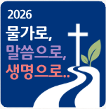
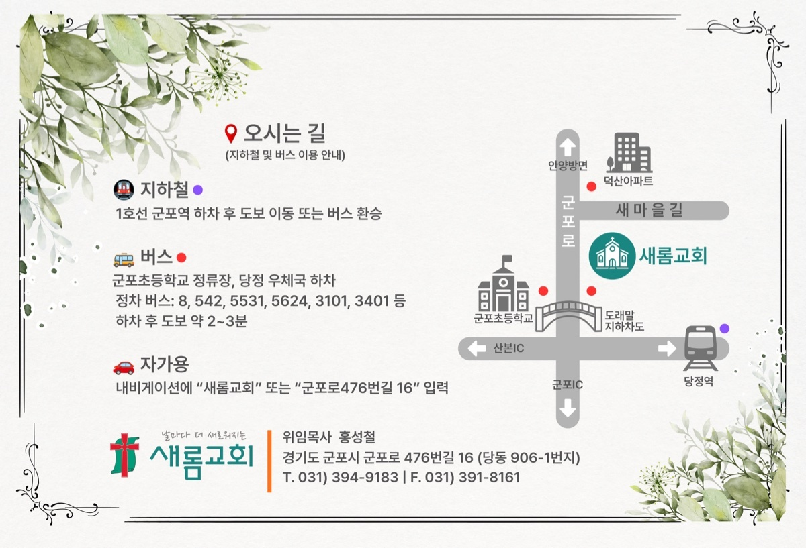

“사랑하는 자여 네 영혼이 잘됨 같이
네가 범사에 잘 되고 강건하기를 내가 간구하노라”
요한3서 1장 2절
하나님의 크신 은혜와 평강이 귀 댁에 가득하시기를 기원합니다.
날마다 더 새로워지는 새롬교회가 주님의 크신 인도하심 속에, 몸 된 교회를 더욱 신실하게 섬길 새로운 직분자를 세우는 임직감사예배를 하나님께 드리게 되었습니다.
오셔서 평생동행의 약속 위에 첫걸음을 딛는 일꾼들을 축복해 주시고, 감사의 자리를 은혜와 기쁨으로 함께 빛내어 주시기를 소망합니다.
좌우 화살표를 누르거나 화면을 밀어 임직자의 다짐과 기도제목을 보실 수 있습니다.
2026년 7월 5일 (주일) 오후 2:00
새롬교회 2층 본당
홍성철 목사
안수집사: 안민희
권사: 이경희, 김태연, 조영아

새로운 임직자들에게 사랑과 축하의 메시지를 남겨주세요.
임직 감사예배 축하드립니다! 주님 안에서 평생동행 다짐하시는 모습에서 큰 도전과 은혜를 받습니다. 축복합니다!
사진이 너무 멋지고 온화하게 잘 나오셨어요! 주님의 신실하고 복된 일꾼으로 언제나 교회의 등불이 되어 주실 것을 믿고 기도하겠습니다.
안수집사님, 권사님들의 임직을 온 교우들과 함께 진심으로 축하드립니다! 평생동행의 복된 여정에 오직 은혜만 가득하기를 기원합니다.